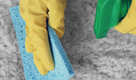
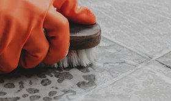
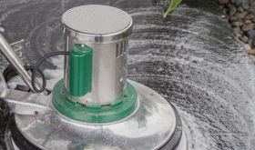
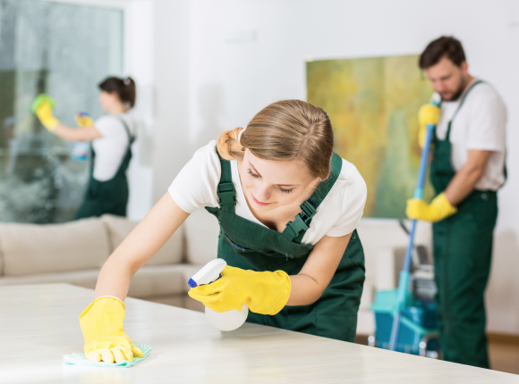

The world's leading cleaning company

Our most popular services
-

Carpet Cleaning
When you choose Chem-Dry, you get deeper clean, faster-drying carpet and healthier home for you.
Learn more -

Tile and Group Cleaning
One of the nicest touches to the basic architectural components of a home is ceramic or stone tile in kitchens, bathrooms deeper clean, faster-drying carpet and healthier home for you.
Learn more -
Tile and Group Cleaning
One of the nicest touches to the basic architectural components of a home is ceramic or stone tile in kitchens, bathrooms
-

Commercial Cleaning
Companies spend millions of dollars on carpeting, upholstery, leather and area rugs
Why Haley's
Chem-Dry’s mission is helping people live healthy lives, which starts with clean carpets and a healthy home. Our proprietary hot carbonating extraction cleaning process penetrates deep into the fibers, removing an average of 98% of common household allergens from carpets, upholstery and rugs and 89% of the airborne bacteria in your home when a sanitizer is added.* Plus, our green-certified solution, The Natural®, contains no soaps or detergents so it’s safe and non-toxic for your family and pets.
